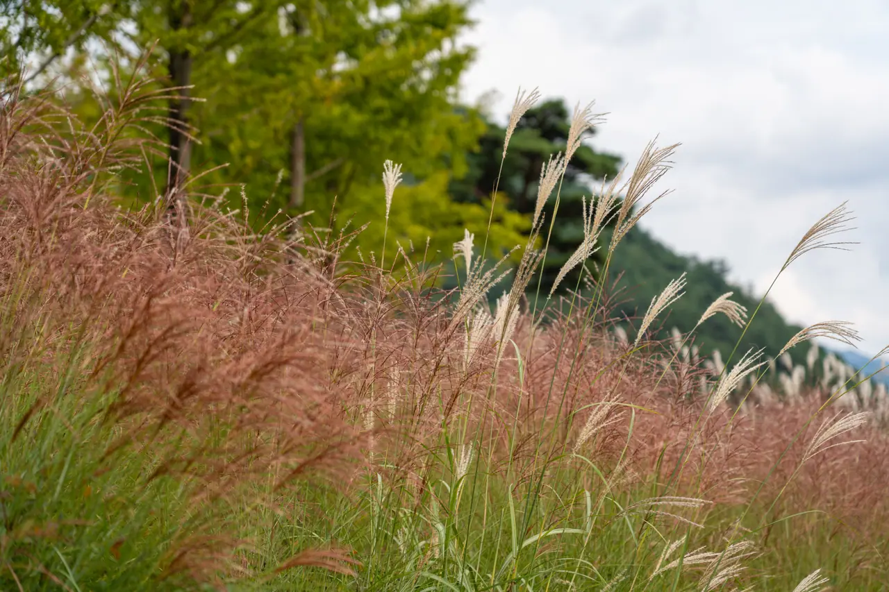
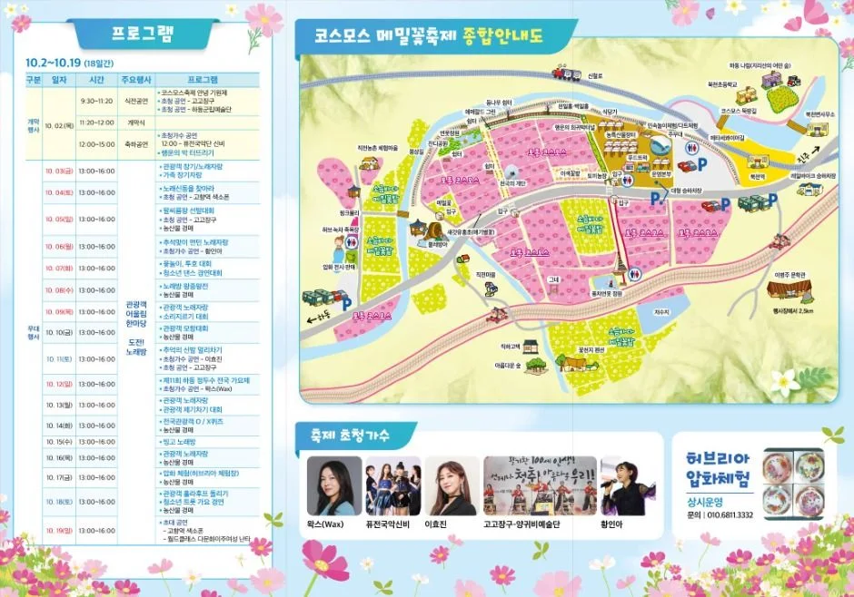
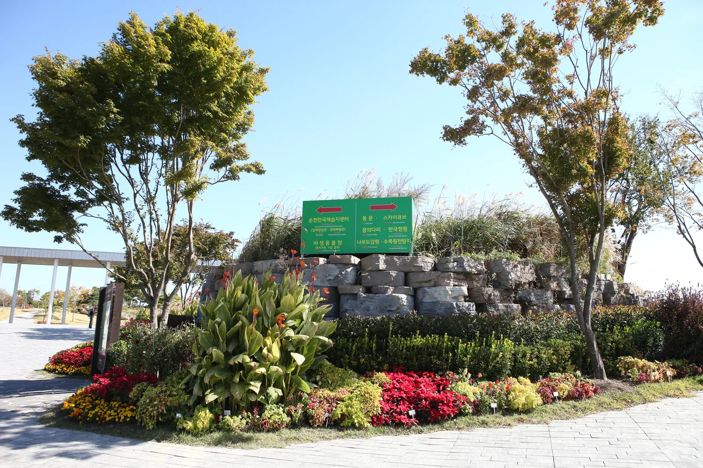
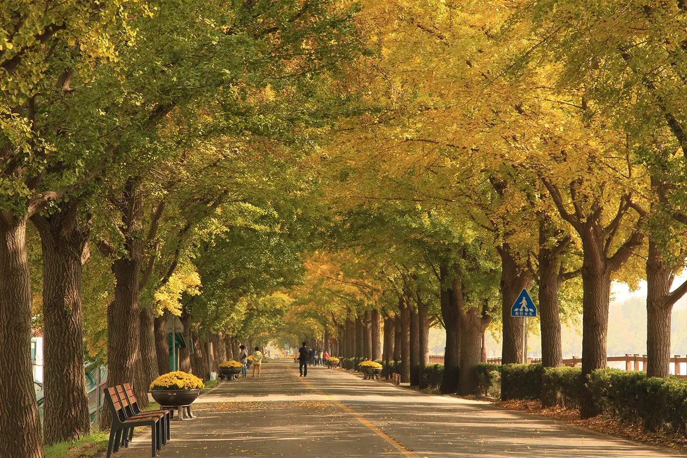

▲ 하동 북천 축제장의 코스모스밭. 9월 중순부터 10월 초까지가 절정이다ⓒ 하동군 (공공누리 제1유형)
가을꽃은 서로 시기가 다릅니다. 같은 '가을 꽃구경'으로 묶이지만 코스모스와 억새 사이에는 3~4주가 놓여 있습니다.
코스모스와 메밀꽃이 먼저입니다. 9월 중순이면 이미 절정에 들어가고, 10월 초면 끝납니다. 억새를 보러 가는 계획으로 9월에 출발하면 아무것도 못 봅니다.
1. 코스모스와 억새는 다른 계절입니다
가을 꽃구경에서 가장 흔한 실패가 시기 착오입니다.
| 대상 | 절정 |
|---|---|
| 코스모스·메밀꽃 | 9월 중순~10월 초 |
| 핑크뮬리 | 10월 초~10월 말 |
| 억새 | 10월 중순~11월 초 |
세 가지가 순서대로 이어집니다. 한 번의 나들이로 다 보려는 계획은 성립하지 않습니다. 9월에는 코스모스, 10월 중순 이후에는 억새로 갈라서 잡아야 합니다.

▲ 억새는 10월 중순부터다. 코스모스와는 3~4주 차이가 난다 ⓒ 한국수목원정원관리원 (공공누리 제1유형)
2. 하동 북천 — 12만 평
국내 최대 규모로 꼽히는 곳은 하동 북천 코스모스·메밀꽃 축제입니다. 2026년 일정은 9월 18일부터 10월 4일까지, 약 17일간입니다.
| 항목 | 내용 |
|---|---|
| 위치 | 경남 하동군 북천면 직전마을 일대 — 북천역 중심 |
| 기간 | 2026년 9월 18일 ~ 10월 4일 (약 17일) |
| 전체 규모 | 약 40만㎡ (약 12만 평) |
| 구성 | 코스모스 36헥타르 · 메밀꽃 6헥타르 |
| 입장료 | 영농조합 관리 구간 1인 1,000원 · 초등학생 이하 무료 · 그 외 구간 무료 |
| 특징 | 옛 경전선 철길을 따라 꽃밭이 이어짐 |

▲ 축제 종합안내도. 코스모스·메밀 구역과 주차장(P) 위치가 함께 표시된다 ⓒ 하동군 (공공누리 제1유형)
📍 입장료 구간이 나뉘어 있습니다
축제장 전체가 유료가 아닙니다. 영농조합법인이 관리하는 구간만 1인 1,000원이고, 나머지는 무료로 볼 수 있습니다.
주차 위치에 따라 무료 구간만 보고 오는 경우도 생깁니다. 어느 쪽을 보러 가는지 미리 정하고 주차장을 고르는 편이 좋습니다.
3. 꽃은 3주, 주차장은 두 시간
차로 가는 축제에서 실제 변수는 꽃이 아니라 주차입니다.
축제 기간에는 임시 주차장이 대폭 확충됩니다. 다만 진입로가 편도 1~2차로인 시골 도로여서, 주차 면수가 늘어도 들어가는 길 자체가 병목이 됩니다.
| 도착 | 상황 |
|---|---|
| 오전 9시 이전 | 주차 여유 · 사진 광선도 좋음 |
| 오전 10시~오후 2시 | 진입로 정체 구간 — 가장 붐빔 |
| 오후 3시 이후 | 회전 시작 · 다만 오후 늦으면 역광 |

▲ 지방 축제장 진입로는 대개 이런 편도 1차로다. 주차 면수보다 진입 용량이 먼저 걸린다 ⓒ 한국관광공사 (공공누리 제1유형)

▲ 부지가 넓은 축제장·수목원은 주차장이 여러 곳에 분산된다. 어느 쪽을 볼지 먼저 정해야 한다 ⓒ 한국수목원정원관리원 (공공누리 제1유형)
4. 수도권에서 가까운 대안
하동은 수도권에서 편도 4시간대입니다. 당일치기로는 부담이 큽니다.
| 장소 | 특징 |
|---|---|
| 안성 팜랜드 | 코스모스와 핑크뮬리를 함께 운영 — 수도권 접근성 |
| 순천만국가정원 | 나눔숲 구간에 코스모스·핑크뮬리 — 남부권 |
| 하동 북천 | 최대 규모 — 코스모스·메밀 동시 |
안성 팜랜드는 시기가 겹칩니다. 코스모스가 끝나갈 무렵 핑크뮬리가 물들기 시작해, 10월 초에 가면 두 가지를 한 번에 볼 수 있습니다.

▲ 순천만국가정원. 부지가 넓어 목적지에 따라 출입문과 주차장이 갈린다 ⓒ 한국문화관광연구원 (공공누리 제1유형)
5. 가는 길도 코스입니다
하동은 섬진강을 끼고 있습니다. 축제장만 찍고 돌아오는 것보다, 강변 도로를 함께 넣는 편이 이동 시간을 덜 아깝게 만듭니다.
북천면은 하동읍에서도 안쪽입니다. 내비게이션이 고속도로 IC에서 국도로 빠지는 경로를 잡을 가능성이 높고, 이 구간에서 마을 도로를 여러 번 통과합니다. 어린이 보호구역과 마을 구간이 반복되므로 시간 여유를 두는 편이 좋습니다.

▲ 목적지만이 아니라 가는 길 자체를 코스로 잡으면 이동 시간의 성격이 달라진다 ⓒ 아산시 (공공누리 제1유형)
▲ 목적지만이 아니라 가는 길 자체를 코스로 잡으면 이동 시간의 성격이 달라진다 ⓒ 아산시 (공공누리 제1유형)
6. 출발 전 확인할 것
| 항목 | 내용 |
|---|---|
| 개화 상황 | 같은 축제라도 해마다 1~2주 차이 — 지자체 공지 확인 |
| 축제 기간 | 2026년 9월 18일~10월 4일 — 변동 시 하동군 공지 기준 · 문의 055-880-6331 |
| 주차장 위치 | 유료 구간과 무료 구간이 다른 주차장일 수 있음 |
| 현금 | 소규모 매대는 카드가 안 되는 곳이 있음 |
7. 정리
코스모스와 메밀꽃은 9월 중순부터 10월 초가 절정입니다. 핑크뮬리(10월 초~말), 억새(10월 중순~11월 초)와는 시기가 어긋나므로 한 번에 다 보려는 계획은 성립하지 않습니다.
최대 규모는 하동 북천으로, 2026년 일정은 9월 18일~10월 4일입니다. 북천역 일대 약 40만㎡(12만 평) 규모이며 코스모스 36헥타르, 메밀꽃 6헥타르로 안내됩니다. 영농조합 관리 구간만 1인 1,000원이고 초등학생 이하는 무료입니다.
차로 간다면 실제 변수는 주차입니다. 임시 주차장이 늘어도 편도 1~2차로 진입로가 먼저 막히므로, 오전 9시 이전 도착이 가장 확실합니다. 수도권에서는 안성 팜랜드가 대안이며 10월 초에는 핑크뮬리까지 함께 볼 수 있습니다.